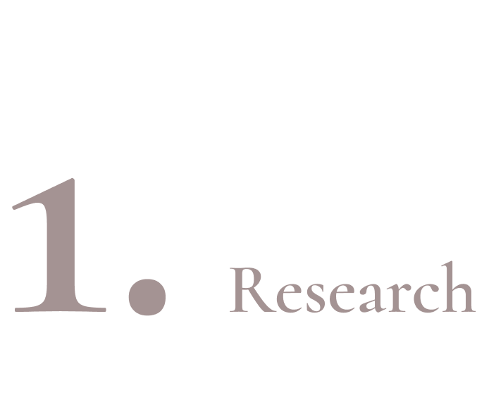
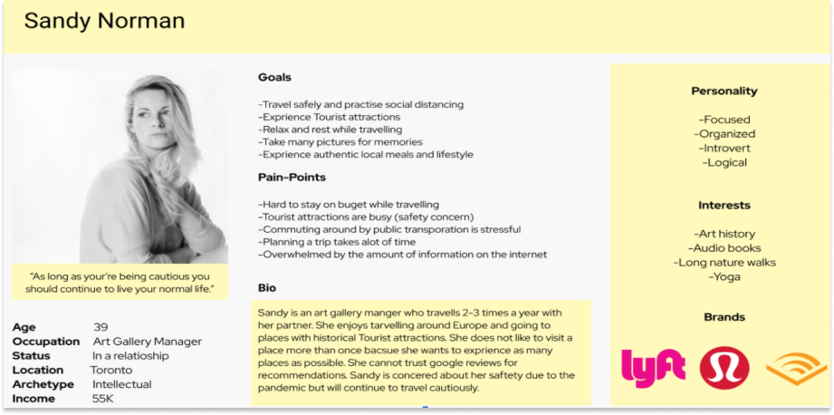
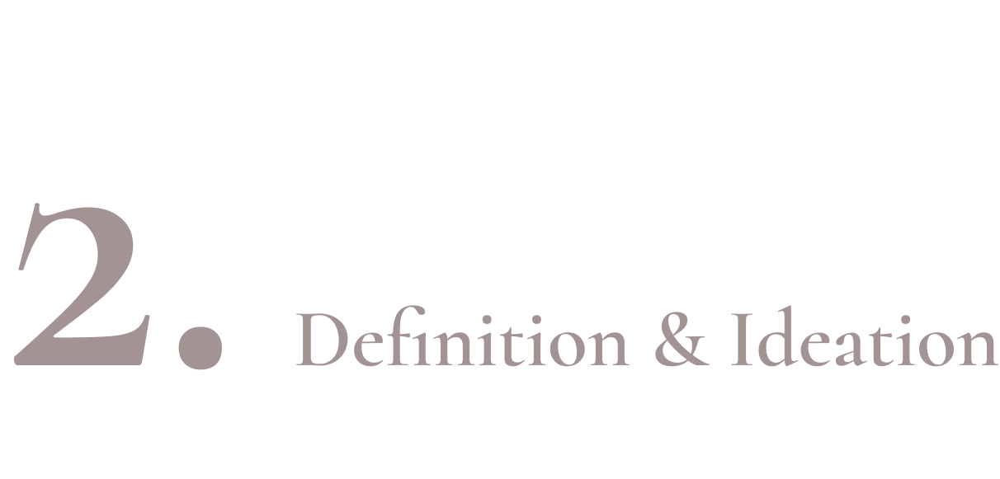
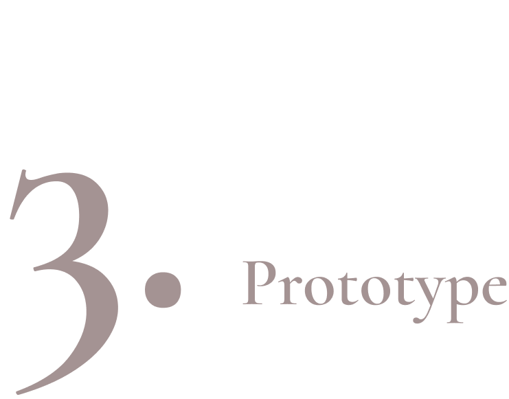
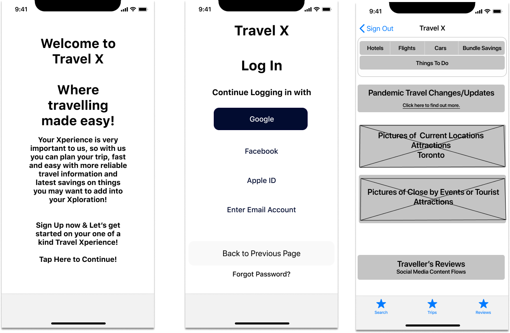
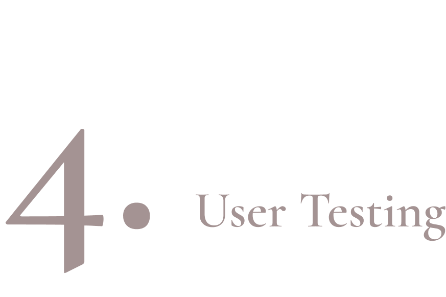
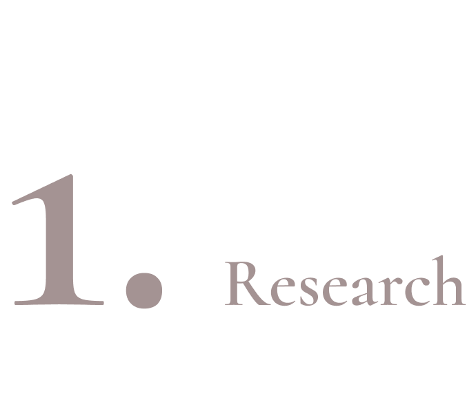
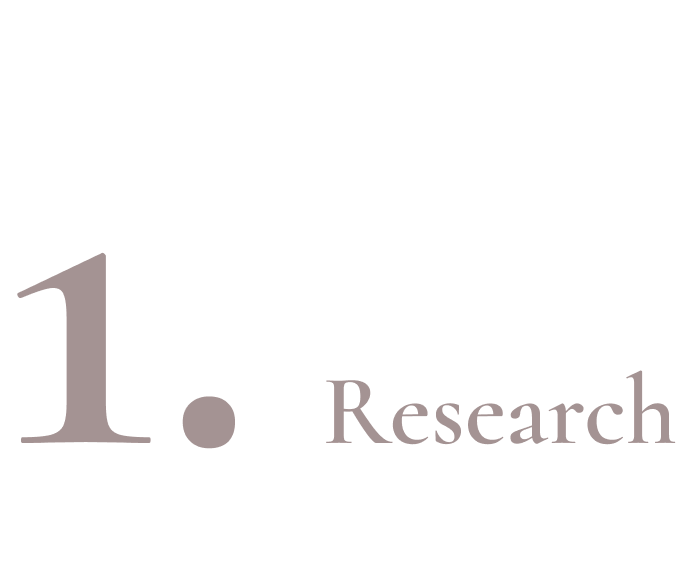

Mobile Application Design
Team Members: Parastou
Duration: 2 Weeks
A start-up project that plans to launch the app once the global Pandemic ends. The goal is to build a modern-day mobile app that helps people plan their next trip, post-Pandemic.
DOUBLE DIAMOND DESIGN PROCESS

User Research
We started this research by using with these methods:
One on One Interviews
Affinity Diagram
Empathy map
The objective is to get insights on the pain points of travelers post-pandemic. With the help of our 5 interviews, we were able to narrow down the right type of traveler this mobile application will be able to help.

Sandy who loves to travel and money conscious, needs help organizing her trips and finding validated travel safety information because of the overwhelming post-pandemic safety precaution information and price inconsistency on the app/website and social media she usually go to check for her trips.

Definition & Ideation
As we continue our brainstorming through our user insights, these are the features we found will be very important for us to feature when we proceed to our prototyping:
Accessibility with partnering travel applications (Uber)
Travel Reviews - real time reviews from past travelers to more current status of the pandemic to the desired destination.
Travel Add On - such as messaging capability on the application itself & filters travel needs to drop cost of travel
Method Used:
Feature Prioritization Matrix
Value of Proposition
User Scenario, Storyboard and Journey Map

Before starting our prototype:
We first conducted a Competitor Analysis to increase more ideas on the design and content of our application.
Initiated a Task Flow & User Flow, to have an initial idea how the user will navigate through our application.
As a result, we introduced our first Lo-Fi Prototype for testing.


User Testing
During this phase, I asked 4 our my testers to do the following tasks:
Create an account using their email address
Turning on their phone's bluetooth through the app - COVID Exposure capabilities
Book a flight
Reset their passwords
As a result, I discovered that the review features isn't as important to the users but more so the users are looking for the official information on how the facilities they will using and going to stay at. Lastly feature add on were simple enough and was very easy to use.
At the end of the testing here are the things I found out more:
Users are ready to spend extra dollars to make sure they get that leisure they can get to a destinations and transportations that details the safety procedures they take to keep them safe and worry free.
Simple texts, clear wordings, and step by step guidance in every step of the way is what users are expecting to have when using a mobile application, specially if we are talking about spending a high number of dollars they are ready to spend. As one of them shared, "if I can do everything on my phone without any worry that things will be limited and complicated - that would be amazing! I don't want to end up using my laptop for it!"
Future Development
From this highlights, as a designer, I truly learned about the importance of simplicity and making sure everything you write or label are clear and easy to understand.
What I would do differently from here would probably asking more questions design and content a user would look for. Usability and the feature was there, but I think if I had more time, I would definitely run another testing on the final draft and get more insights on it.
 
